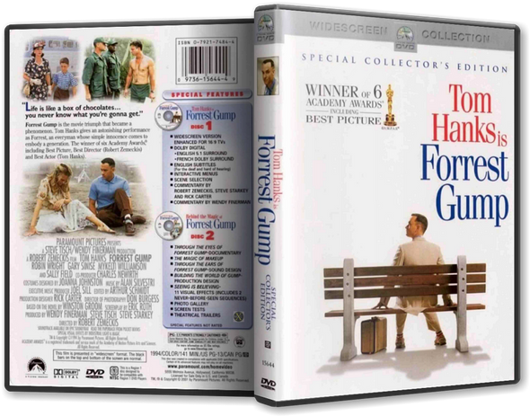

Description
The presidencies of Kennedy and Johnson, the Vietnam War, the Watergate scandal
and other historical events unfold from the perspective of an Alabama man with
an IQ of 75, whose only desire is to be reunited with his childhood sweetheart.
Forrest Gump is a simple man with a low I.Q. but good intentions. He is running through
childhood with his best and only friend Jenny. His 'mama' teaches him the ways of life and
leaves him to choose his destiny. Forrest joins the army for service in Vietnam, finding new
friends called Dan and Bubba, he wins medals, creates a famous shrimp fishing fleet, inspires
people to jog, starts a ping-pong craze, creates the smiley, writes bumper stickers and songs,
donates to people and meets the president several times. However, this is all irrelevant to
Forrest who can only think of his childhood sweetheart Jenny Curran, who has messed up her life.
Although in the end all he wants to prove is that anyone can love anyone.


Next Movie->
<- Go Back To MoviesList